NAVIGATION SYSTEM (for DVD) > OPERATION CHECK |
| CHECK SYSTEM NORMAL CONDITION |
If the cause of a symptom is any of the following, the corresponding symptom is normal; it is not a malfunction.
| Symptom | Answer |
| Longer route than expected is chosen | Depending on road conditions, display and navigation module display may determine that longer route is quicker |
| Even when distance priority is high, the shortest route is not shown. | Some routes may not be advised due to safety concerns |
| When vehicle is put into motion immediately after engine starts, navigation system deviates from actual position | If vehicle starts before navigation system activates, system may not react. |
| When driving on certain types of roads, especially new roads, vehicle position deviates from actual position | When vehicle is driving on new roads not available on map disc, system attempts to match vehicle position to another nearby road, causing position mark to deviate |
 |
The following symptoms are not malfunctions, but are caused by errors inherent in the GPS, gyro sensor, speed sensor or display and navigation module display.
The current position mark may be displayed on a nearby parallel road.
| 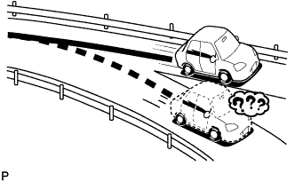 |
Immediately after a fork in the road, the current vehicle position mark may be displayed on the wrong road.
| 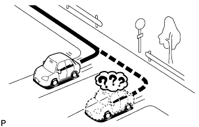 |
When the vehicle turns right or left at an intersection, the current vehicle position mark may be displayed on a nearby parallel road.
 |
When the vehicle is carried, such as on a ferry, and the vehicle itself is not being driven, the current vehicle position mark may be displayed in the position where the vehicle was until a measurement can be performed using GPS.
| 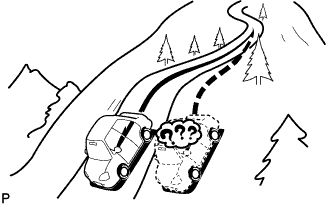 |
When the vehicle travels on a steep hill, the current vehicle position mark may deviate from the correct position.
| 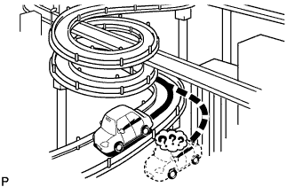 |
When the vehicle makes a continuous turn (e.g. 360, 720 or 1080 degrees), the current vehicle position mark may deviate from the correct position.
| 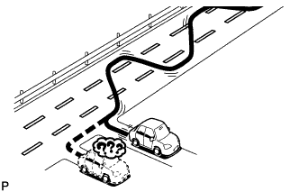 |
When the vehicle moves erratically, such as when making constant lane changes, the current vehicle position mark may deviate from the correct position.
| 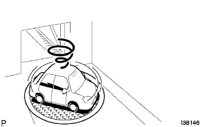 |
When the engine switch is turned on (ACC) or on (IG) on a turntable before parking, the current vehicle position mark may not indicate the correct direction. The same will occur when the vehicle comes out of the parking garage.
| 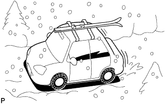 |
When the vehicle travels on a snowy road or a mountain path with tire chains installed or using a spare tire, the current vehicle position mark may deviate from the correct position.
| 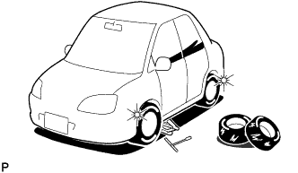 |
When the tires are changed, the current vehicle position mark may deviate from the correct position.
| CHECK PANEL & STEERING SWITCH |
Enter diagnostic mode (Click here).
 |
Select "Function Check/Setting" from the "Service Menu" screen.
| 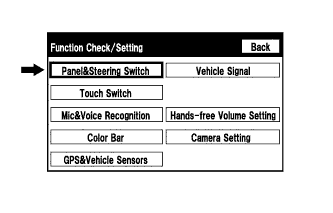 |
Select "Panel & Steering Switch" from the "Function Check/Setting" screen.
Panel & Steering Switch Check Mode
| 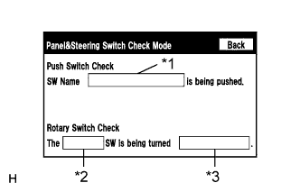 |
Operate each switch and check that the switch names and conditions are correctly displayed.
| Display | Content |
| *1: Push switch name |
|
| *2: Rotary switch name | Name of rotary switch is displayed |
| *3: Rotary switch direction | Direction of rotary switch is displayed |
| CHECK TOUCH SWITCH |
Enter diagnostic mode (Click here).
|
Select "Function Check/Setting" from the "Service Menu" screen.
| 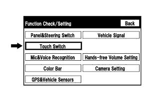 |
Select "Touch Switch" from the "Function Check/Setting" screen.
 |
Touch Switch Check
Touch the display anywhere in the open area to perform the check when the "Touch Switch Check" screen is displayed.
| CHECK MIC & VOICE RECOGNITION |
Enter diagnostic mode (Click here).
|
Select "Function Check/Setting" from the "Service Menu" screen.
| 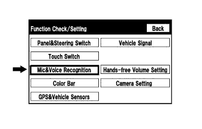 |
Select "Mic & Voice Recognition" from the "Function Check/Setting" screen.
Microphone & Voice Recognition Check
| 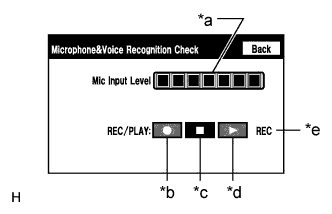 |
When speaking into the microphone, check that the microphone input level meter changes according to the input level.
Push the recording switch and perform voice recording.
Check that the recording indicator remains on while recording and that the recording can be played normally.
| *a | Microphone Input Level Meter |
| *b | Recording Switch |
| *c | Stop Switch |
| *d | Play Switch |
| *e | Recording Indicator |
| CHECK COLOR BAR |
Enter diagnostic mode (Click here).
|
Select "Function Check/Setting" from the "Service Menu" screen.
| 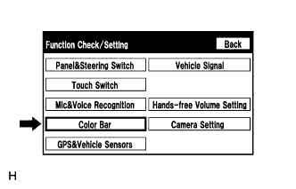 |
Select "Color Bar" from the "Function Check/Setting" screen.
Color Bar Check Mode
| 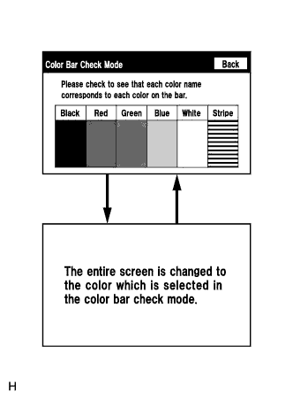 |
Select a color bar from the "Color Bar Check Mode" screen.
Check the display color.
| CHECK GPS & VEHICLE SENSORS |
Enter diagnostic mode (Click here).
|
Select "Function Check/Setting" from the "Service Menu" screen.
| 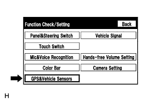 |
Select "GPS & Vehicle Sensors" from the "Function Check/Setting" screen.
GPS information
 |
When GPS information is displayed, check the GPS conditions.
Select "Sensors Check" from the "GPS Information" screen.
Vehicle Sensors
 |
Check all the signals and sensors when vehicle signal information is displayed.
| CHECK VEHICLE SIGNAL |
Enter diagnostic mode (Click here).
|
Select "Function Check/Setting" from the "Service Menu" screen.
| 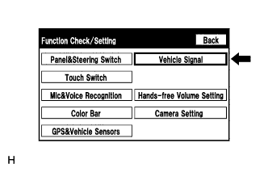 |
Select "Vehicle Signal" from the "Function Check/Setting" screen.
Vehicle Signal Check Mode
| 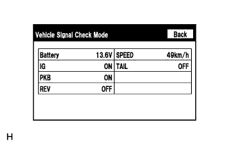 |
When the "Vehicle Signal Check Mode" screen is displayed, check all the vehicle signal conditions.
| CHECK HANDSFREE VOLUME SETTING |
Enter diagnostic mode (Click here).
|
Select "Function Check/Setting" from the "Service Menu" screen.
| 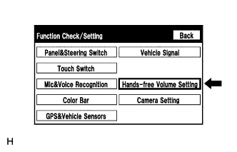 |
Select "Hands-free Volume Setting" from the "Function Check/Setting" screen.
Handsfree Volume Setting
| 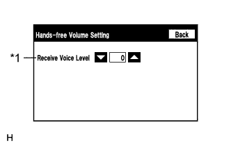 |
Check the handsfree volume level.
| Display | Content |
| *1: Receive voice level adjustment | Setting possible for voice level received from "Bluetooth" compatible phones |